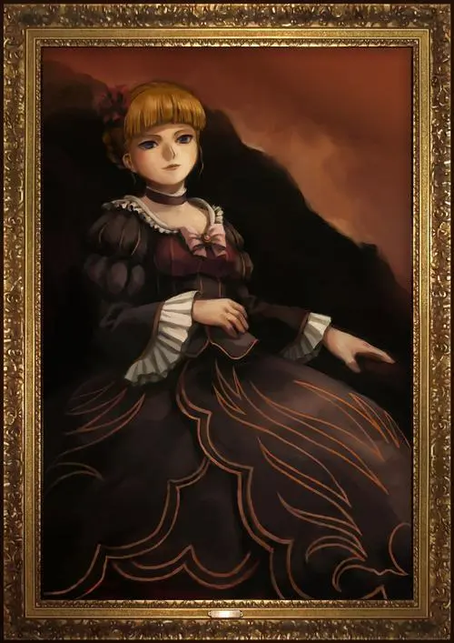

覚え書き
「碑文」とは、六軒島の右代宮の屋敷の玄関ホールに飾られたベアトリーチェの肖像画の下に設置された石版に彫られている謎の詩のことである。 碑文は、金蔵によって2年前にベアトリーチェの肖像画とともに設置された。
六年前から六軒島には来ていなかった戦人にとっては今回はじめて見ることになる。 右代宮家に関わる者の間では、この碑文が金蔵が若かりし頃に手に入れたという「10トンの黄金」の隠し場所を示しているとも噂されている。
肖像画と碑文の玄関ホールでの展示開始時期が84年4月であることは、ep1,2では明かされていない。
肖像


碑文
——碑文原文——
懐かしき、故郷を貫く鮎の川。
黄金郷を目指す者よ、これを下りて鍵を探せ。
川を下れば、やがて里あり。
その里にて二人が口にし岸を探れ。
そこに黄金郷への鍵が眠る。
鍵を手にせし者は、以下に従いて黄金郷へ旅立つべし。
第一の晩に、鍵の選びし六人を生贄に捧げよ。
第二の晩に、残されし者は寄り添う二人を引き裂け。
第三の晩に、残されし者は誉れ高き我が名を讃えよ。
第四の晩に、頭を抉りて殺せ。
第五の晩に、胸を抉りて殺せ。
第六の晩に、腹を抉りて殺せ。
第七の晩に、膝を抉りて殺せ。
第八の晩に、足を抉りて殺せ。
第九の晩に、魔女は蘇り、誰も生き残れはしない。
第十の晩に、旅は終わり、黄金の郷に至るだろう。
魔女は賢者を讃え、四つの宝を授けるだろう。
一つは、黄金郷の全ての黄金。
一つは、全ての死者の魂を蘇らせ。
一つは、失った愛すらも蘇らせる。
一つは、魔女を永遠に眠りにつかせよう。
安らかに眠れ、我が最愛の魔女ベアトリーチェ。
——中国語訳——
贯穿那怀念的、故乡的鲇之川啊。
目标黄金乡的人们哟，顺流而下来寻找钥匙。
顺川而下，终会到达“里”。
在这“里”寻找两人开口之岸。
此处沉眠着通往黄金乡的钥匙。
手持钥匙的人啊，应遵循以下所记出发前往黄金乡。
在第一晚，奉献上钥匙选中的六名活祭。
在第二晚，余下来的人啊撕裂紧靠的两人。
在第三晚，余下来的人啊赞颂吾高贵之名。
在第四晚，剜头杀之。
在第五晚，剜胸杀之。
在第六晚，剜腹杀之。
在第七晚，剜膝杀之。
在第八晚，剜足杀之。
在第九晚，魔女复苏，无人生还。
在第十晚，旅途结束，终至黄金之乡。
魔女赞颂贤者，授予四件宝物。
一件是，黄金乡里全部的黄金。
一件是，所有死者那灵魂的复苏。
一件是，连已经失去的爱都复苏。
一件是，用于使魔女永眠。
安宁的睡吧，吾最爱的魔女贝阿朵莉切。